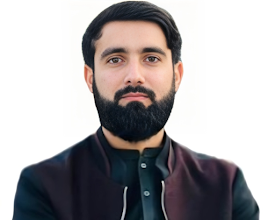

Aspiring Frontend Developer currently mastering the foundations of web development, starting with semantic HTML5. Dedicated to building accessible and well-structured web pages while actively expanding my skill set into CSS3 and JavaScript. Passionate about clean code and committed to a rigorous daily learning schedule to become a proficient developer.